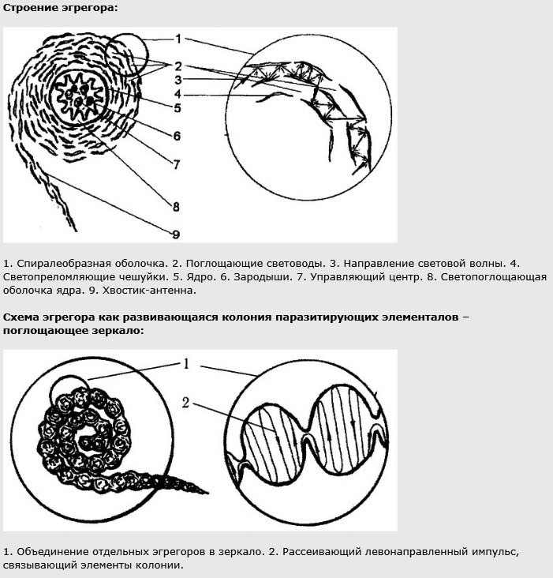

Warrax
Понятие эгрегора
(Ad usum externum Liber III)
Идея, овладевшая массами, становится материальной силой.
В.И. Ленин
Определение «сатанизм — это инвольтация к эгрегору Сатаны» я использую ещё с прошлого тысячелетия. Пожалуй, уже пора объяснить, что я понимаю под эгрегором.
Понятие вроде бы простое и понятное, но тень на плетень навели изрядно. Вот представьте: некто заинтересовался темой, прочел моё определение и полез в интернет выяснять, о чем речь. И на что же он наткнется?
1. Если заглянуть в интернет
Вот никаких и не читайте.
Ф.Ф. Преображенский
Я, конечно, подозревал, что все плохо, но и не догадывался, насколько. Аналогия: некто решил выяснить, что такое теория поля, а в интернете — даже не про агрономию, а исключительно про торсионные поля, а ещё про конопляные. И решит он, что область физики, именуемая теорией поля, — буйное фричество.
Не буду проставлять ссылки — незачем загромождать статью, но всё это находится в инете по запросам вида «что такое эгрегор» и т.п. в первую очередь. Примите устойчивое положение, уберите от клавиатуры чай, кофе и пиво, и читайте.
* «Эгрегоры. Элифас Леви называет их “руководителями душ, которые являются духами энергии и действия”, — что бы это ни значило. Восточные оккультисты описывают Эгрегоров как Существа, тела и сущность которых суть ткань так называемого астрального света. Они — тени более высоких Планетарных Духов, тела которых образованы из сущности более высокого божественного света» — теософский словарь Блаватской.
* «Эгрегор есть основная структурная единица тонкого мира. Каждой организации на Земле соответствует область в тонком мире, называемая ее эгрегором».
* «Сефиры являются генераторами Энерго-Информационного сигнала, создающего миры… Наш мир является энерго-информационным сигналом, созданным самой “нижней” Сефирой Малкут. Все остальные Сефиры генерируют сигналы, которые строят иные миры, с другими параметрами…
Каналы планетарного сознания являются базой для построения всех эгрегоров, управляющих людьми на Земле, в зависимости от положения их Точки Сборки» — крутой замес с каббалой и кастанедчиной.
* «…эгрегор — это живая сущность, обладающая определенными индивидуальными характеристиками, определенной самостоятельностью, но неразрывно связанная с источником, породившим ее. На определенном уровне своего развития эгрегор начинает сам заботиться о своем росте и процветании…».
* «Эгрегоры представляют собой организмы следующего по отношению к человеку уровня. Люди входят в состав этих организмов как составные элементы».
* «Эгрегор является не только структурой, но и существом, обладающим сознанием. В свою очередь, это сознание является составной частью сознания планеты…»
* «В эгрегоры выстраиваются различные организмы, существуют эгрегоры животных видов, эгрегоры растений и эгрегоры кристаллов. В нашем мире многие простейшие организмы живут лишь в виде колоний — автономных образований, включающих в себя множество особей, это некоторая модель эгрегора. …
Человек тоже является эгрегором, однако, другого уровня. Его тело состоит из органов, которые состоят из тканей, состоящих из клеток. Можно говорить о том, что человек, как эгрегор, включает в себя другие эгрегоры — отдельные органы».
* «Ну, и что же это такое? Это, дамы и господа, энергоинформационная сущность, задача которой выводить человека на эмоции и питаться его энергией. Любая эмоция — это выделение энергии, а, значит, нажимая на определённые кнопочки неосознанного существа, эгрегор, манипулируя людьми, создаёт конфликт и питается жизненной силой человеческих созданий».
* «Живые люди, как и вся остальная природа, частью которой они являются, излучают общеприродные поля, т. е. энергию и информацию по мере, предопределяющей бытие каждого и всех. Совокупность полей биосферно-органического происхождения стало принято называть биополем. Человек чувствует и воспринимает мир не только органами, построенными из вещества его биомассы, но и через общеприродные поля, свойственные его организму, т.е. воспринимает информацию своим биополем.
Если некое множество людей имеет сходные параметры их энергетики (перечень полей, частоты, поляризация и т. д.; это подобно настройке телевизора), то биополевое излучение одной и той же информации многими людьми порождает энергоинформационную систему на полевых носителях, именуемую в оккультной литературе “эгрегором”».
* «В физическом мире эгрегором можно назвать совокупность единого построения структуры общества, в котором единицей самоорганизации является человек. В этом смысле самоорганизация общества через государственные структуры является условием образования в тонком пространстве эгрегориальной структуры, которая имеет подобно государственной степень самоорганизации. Таким образом можно разделить эгрегориальную систему в тонком мире по государствам физического мира».
* «Каждый эгрегор излучает энергетические и информационные потоки (то есть психическую энергию) на определенных, свойственных только ему частотах, поэтому его воспринимают не все люди, а только те, кто на него настроен».
* «Эгрегор есть духовное существо, рождение эгрегора есть при рождении человека. Эгрегор внемлет всем мечтам и идеям своего человека. Он исполняет их, независимо от времени, даже после смерти своего человека».
* «Чужой эгрегор надобно отнять сило?? у ??ругого существа. Вас за это накажут, если Вы не обратитесь к помощи Макрокосма, Абсолюта и Бауса Афстандера».
* «Если Ваш эгрегор открыт и незащищен тайными знаками, его энергию может черпать Чужое существо. Назовите именем своего эгрегора и не говорите сие имя никому».
* «Металлические предметы вбирают в себя энергию эгрегора. Но… вещь можно ПОТЕРЯТЬ! А если Ваш эгрегор живет в Астрале, он не потеряется».
* «…иноматериальные образования, возникающие из некоторых психических выделений человечества над большими коллективами: племенами, государствами, некоторыми партиями и религиозными общинами. Они лишены монад, но обладают временно сконцентрированным волевым зарядом и эквивалентом сознательности».
* «Людские эгрегоры входят в общебиосферные, а те, в свою очередь, в общепланетные и т. д. по иерархии Мироздания».
* «В данный момент времени христианский центральноканальный эгрегор находится около Земли. Христос, Архангел Михаил и Дева Мария готовят души верных христиан к Большому путешествию к Центру Вселенной, который физически совпадает с Центром Гиперпространства (Гиперсферы), то есть в Абсолютный Рай. … Очень черным видится эгрегор Карлоса Кастанеды».
* «Эгрегоры как сгустки гиперпространственной энергии».
* «Эфирные ткани русского эгрегора были поглощены демоном государственности. Эгрегор как некое подобие личности, обладавшее подобием сознательности и подобием воли, перестал существовать. Те излучения человеческих психик, которые превращались в его ткань, отныне сделались продуктом питания Жругра».
* «С точки зрения физики, это полевое образование представляет собой солитон — волновой пакет или резонатор».
* «Денежный эгрегор помогает каждому, кто подключен к нему. Именно его содействием объясняется наличие или отсутствие денег у любого из нас. Каким же образом происходит подключение к денежному эгрегору? Подключение к денежному эгрегору происходит при помощи правильного обращения к нему, соблюдения “денежных” примет и некоторых рекомендаций практики Фэн-Шуй».
* «Троичность Божества, символически (хотя и по-разному) представленная во многих религиях, на оккультном языке означает существование трех Главных эгрегоров, управляющих земными делами, и инвольтируемых непосредственно Планетарным эгрегором. Эти три эгрегора достаточно абстрактны и высоки, но все же поддаются некоторому описанию, которое во многих случаях дает возможность понять, к какому из них относится деятельность того или иного конкретного эгрегора или человека.
Первый Главный эгрегор (в западной астрологии он символизируется Плутоном) имеет ключевое слово “воля”. В своих высших проявлениях — это Десница (или воля) Божья… Второй Главный эгрегор (планета Нептун) имеет ключевое слово “чувство”. В высших его проявлениях — это Божественная любовь, милость, сострадание и благодать Божия… Третий Главный эгрегор (планета Уран) имеет ключевое слово “действие”. В высших проявлениях — это Перст Божий, чудо, то есть любое прямое вмешательство Божее в дела земные».
* «Эгрегор — резонансное явление (объединение) источников энергии, как по несущей частоте, так и по модулируемому содержанию (информационному наполнению); энерго-информационное поле, воздействующее на людей, иными словами — коллективное бессознательное. … ДУША — базовая информационная алгоритмическая система, осуществляющая приём, обработку и выдачу информации или попросту обслуживающая поведение человека. Душа находится в подсознании человека, тогда как ПСИХИКА — это эгрегориально-матричная надстройка над его подсознанием»
* «…эгрегоры обычно составляют “фундамент” Метакультур — значительно более крупных (но зато более тонких) трансфизических образований, включающих в себя еще и Унцраоров, и Затомисы, и “общие поля сознания” различных уровней всеобщности. “Диапазон” слоев Метакультур обычно простирается до Мутабельного слоя, а осевые токи, порождающие ту или иную Метакультуру, чаще всего имеют внеземное происхождение. Таким образом, Метакультуры обеспечивают интеграцию человеческого опыта в значительно больших масштабах, чем это способны делать эгрегоры… Верхние слои Метакультур, Затомисы, питают своими эманациями наиболее тонкие и чистые представители человечества, его культурная, интеллектуальная и духовная элита…» — даже картинка есть: видите, как все наглядно?
Иногда подобное словоблудие пытаются привязать к чему-нибудь «для солидности». Скажем, наглеют и примазываются к физике — правда, в весьма своеобразном понимании.
* «Физики могут представить эгрегоры как однозаряженные полевые области, однако, в отличие от электромагнитного поля, для которого существуют только два заряда “+” или “-“, заряд торсионного поля выражается в градусах отклонения от Божественного (эталонного фитонного, или иначе выражаясь, нуль градусно заряженного торсионного информационного) поля. Таким образом, центральноканальные эгрегоры имеют заряд торсионного поля, близкий к 0 градусов (допустимым является отклонение около 0,5 секунды).
Заряд демонического эгрегора, конечно же, не +180 градусов, однако отклонение от Божественного маяка все же выражается в градусах».
* «В своей работе “Теория физического вакуума” её автор Г.И. Шипов пишет: “Скорость торсионных волн может меняться в пределах от скорости света до бесконечности. Это не является чем-то неожиданным. В физике давно рассматриваются теоретические объекты со сверхсветовыми скоростями — тахионы. В одной из публикаций было указано на большое число астрофизических объектов, движущихся со скоростями больше скорости света…” …биополевые излучения многих людей, содержащие одну и ту же одинаково разМЕРенную информацию, порождают энергоинформационную систему на полевом носителе (материей является общее биополе). Такая энергоинформационная система называется эгрегор».
С другой стороны, есть и совсем экзотика. Вот, скажем, «Чары АЗАЗОТА[1]»:
* «Атрибутика: Октариновая магия[2]
Азазот — это эгрегор, связанный с образованием некой ощущаюшей сентенции из примордиальной слизи (бесформенной субстанции, предшествующей бытию) и устремление этой сентенции к звездам. Он связан с подобной деятельностью в звездных системах иных чем наша, самая ближайшая из которых — Денеб в Кугниусе.
Азазот — это один из тех, кого можно называть Старейшими Богами, представляющими мощнейшие силы, близкие к вездесущему эпицентру Хаоса. Оператор должен быть осторожен, чтобы не разозлить эту силу, призывая ее для тривиальных целей, или же прося ее сделать что-либо, что бы противоречило ее природе».
Или вот:
*«Есть ли сверхмеханизм или Эгрегор, которому подчиняются все остальные эгрегоры вместе взятые? Да, такой Суперэгрегор есть. Но это отдельная тема. Есть алгоритм, которому подчиняются все эгрегоры, манипулирующие людьми. Этот алгоритм — наш Григорианский календарь».
* «Про Золотой ключик отдельный рассказ. В нем действующие персонажи нисколько не ищут старинную дверь. Карабас-барабас это — эгрегор старинных мудрецов, который осуществляет свои цели, действуя в социальной реальности, как в театре марионеток. Они открыли особенности Золотого ключика, так что вопрос замаскированной двери для них потерял актуальность. Золотой ключик или свои психические способности они используют, отпирая и запирая волшебный мир в любом его месте. То, что один из дубликатов Золотого ключика упал в пруд лягушек (стал доступным для линий практических магов в Мексике) их особенно не взволновал».
Чтобы не обознаться, вот рисунок (правда, из другой статьи, но ведь тоже про эгрегоры):

Ну и напоследок — практическая рекомендация (правописание сохранено):
«Для тех кто хотит увидеть эгрегора, самый простой вариант. Езжайте с друзьями на природу,вечерком сядьте у костра, песни под гитару и в это время можете сфотать людей вокруг костра на цифровой фотик, потом на фотографии можете увидеть как бы белесые шарик или шарики над группой людей (на темном фоне всегда хорошо видно). Ети шарики и есть не что иное как новорожденные эгрегорчики (созданные этой группой,когда им просто было хорошо и были настроены на музыку и отдых)».
Впечатлены? Я вот впечатлился. Поэтому так много и процитировал, чтобы масштаб проблемы был наглядно виден.
Ладно, теперь давайте перейдём к изложению темы на адекватном уровне.
2. Этимология термина
Слово не воробей. Вообще ничто не воробей, кроме воробья.
Чаще всего можно встретить объяснение, что термин «эгрегор» происходит от латинского «grex» (общество, стадо, толпа) и приставки «ex» (из, от). Соответственно, означает приблизительно «идущее от толпы» (явно видна попытка десакрализации термина). Однако в латыни такого термина непосредственно нет, да и «exrgex» как-то мало похоже на «эгрегор».
Более вероятна версия, что термин образовался от древнегреческого «ἐγρήγοροι».
«Εγρηγοροι» — буквально «неспящие», «возбуждённые», «сторожащие». Слово ведёт свое начало от «εγειρω » (будить, возбуждать, воспламенять, воздвигать (здание), исцелять, воскрешать)[3].
Это слово используется в Септуагинте, «Плач Иеремии», 4:14 (о грехах пророков и священников Иерусалима): «Ἐσαλεύθησαν ἐγρήγοροι αὐτῆς ἐν ταῖς ἐξόδοις, ἐμολύνθησαν ἐν αἵματι· ἐν τῷ μὴ δύνασθαι αὐτοὺς ἥψαντο ἐνδυμάτων αὐτῶν» [1]. Очень интересно, что переведено как раз наоборот: как «слепые». Синоидальный перевод аналогичен: «бродили как слепые по улицам, осквернялись кровью, так что невозможно было прикоснуться к одеждам их», также и в King James Bible: «They have wandered as blind men in the streets, they have polluted themselves with blood, so that men could not touch their garments» [2]. А вот на церковнославянском корректнее: «ППоколебашеся бодрiи егw на стогнахъ, wсквернишася въ крови, внегда немощи имъ, прикоснушася одеждъ своихъ» [3]. При желании из этого можно сделать гностическую конспирологическую теорию — мол, «видящих» заменили на «слепых» переводчики под личным руководством Илдабаофа. Хотя — какие там «видящие» в сакральном смысле среди такого контингента в Иерусалиме?
Интереснее в апокрифах. «Видящие/стражи» упоминаются в Книге Еноха [4]: «И вся его деятельность в течение земной жизни была со святыми и со стражами»; также the watchers упоминаются в Книге Юбилеев [5]: «И он дал свидетельство стражам, которые согрешили с дочерьми человеческими. Ибо они стали смешиваться, чтобы оскверняться с дочерьми человеческими» — тема известная, Нефилимы и все такое. Кому интересно подробнее — см. ссылки по теме в английской Википедии[4] [6] — не на русском, зато всё в одном месте. Также см. Н.Э. Джексон, М. Говард, «Столпы Тубал Каина» [7].
Такое происхождение слова вполне адекватно смыслу, в гностической системе Нефилимы как «силы влияния на людей» — вполне логично. Что касается разночтений перевода, то варианты «слепой» и «видящий» отражают разные аспекты взаимодействия с эгрегорами (см. далее), так что получается стройненько, хотя, разумеется, я не утверждаю, что-де «всё точно так и было, именно так термин и изобрели».
Примечание: ударение ставится на второй слог: эгрeгор [8].
В качестве дополнения: во французском есть слово «agreger» — соединять (в одно целое), сцеплять; принимать, допускать (в общество, корпорацию). Тоже в тему.
3. Ошибка гипостазирования
— Какая химическая формула у сжатого кислорода?
— O2.rar
Типичнейшей ошибкой мышления при неумении мыслить абстрактно на достаточном уровне является гипостазирование.
«ГИПОСТАЗИРОВАНИЕ (от греч. ὑπόστᾰσις — сущность, субстанция) — логическая (семантическая) ошибка, заключающаяся в опредмечивании абстрактных сущностей, в приписывании им реального, предметного существования.
Эту ошибку допускает, напр., тот, кто считает, что наряду со здоровыми и больными людьми в реальном мире есть еще такие отдельные “существа”, как “здоровье” и “болезнь”. Или даже что есть особые предметы, обозначаемые словами “ничто” и “несуществующий предмет”.
Опасность Г. существует не только в обыденном рассуждении, но и в научных теориях. Г. допускает, напр., юрист, когда говорит об идеальных нормах, правах и т.д. так, как если бы они существовали где-то наряду с лицами и их отношениями. Эту же ошибку совершает этик, считающий, что “справедливость”, “равенство” и т.д. существуют в том же смысле, в каком существуют люди, связанные этими социальными отношениями.
Идея, что общим именам соответствуют не только обозначаемые ими отдельные предметы или лица, но и какие-то “общие предметы”, восходит к Платону. Активные споры об объектах общих имён велись в Средние века. Сторонники реализма считали, что общее существует до предметов (в уме бога), в предметах и, наконец, после предметов (в уме человека, фиксирующем их общность в каких-то чертах). Их противники номиналисты протестовали против опредмечивания абстрактных сущностей. С т. зр. номинализма реальны только единичные вещи, общее же существует только в уме человека, но не в самом мире.
Возражение против Г. было связано также с требованием “не удваивать сущности”, известным под названием “бритва Оккама”. Если не только объекты, но и их общие свойства становятся самостоятельными предметами, это означает, что мир удваивается. Нельзя сомневаться в том, утверждали номиналисты, что существуют “круглые вещи”, однако необходимо протестовать против существования в качестве особого объекта также “круглости”. Признание существования такого объекта означало бы, что вещи, называемые “круглыми”, дополняются новой вещью, именуемой “круглостью”.
Г. недопустимо в строгом рассуждении, где “удвоение мира” ведет к путанице между реальными предметами и вымышленными. Но оно успешно используется в художественной литературе, где правда и вымысел могут переплетаться» [9].
Т.е., говоря об эгрегоре, многие представляют, что-де есть такой объект, пусть даже и в «нематериальном тонком мире». Пусть его нельзя пощупать, но хотя бы в виде какого-нибудь поля, скажем, «торсионного». По той же причине — неспособность отличить действительность от реальности — многие воспринимают богов исключительно антропоморфно. Мол, есть такие личности, которым не пофиг, что мы тут делаем, надо стараться им понравиться и все такое.
Честно говоря, давным-давно, когда я только-только осознал себя сатанистом, мыслил я еще весьма сциентично (не доходя до «наука не доказала — значит, нет», но все же скептиком [10] не был), и тоже думал, что эгрегоры можно представить как некие объекты в ноосфере. Концепцию академика Вернадского я тогда знал лишь в пересказах по мотивам, на самом же деле в концепции ноосферы ничего подобного нет [11].
Все просто: надо различать реальность (бытие) и действительность. Тема обширная, для её раскрытия надо писать отдельную работу, так что здесь — очень кратко.
Во-первых, мы не можем утверждать, что познаём именно реальность (бытие — то, что есть на самом деле): нет способов определить, является ли что-либо Истиной: для этого нужны критерии истиннее Истины. Субъективный идеализм (солипсизм) или модель «Matrix has you» неопровержимы в принципе (а то, что на практике от них пользы нет — это другой вопрос).
Во-вторых, познавать мир мы можем, лишь строя модели действительности — другого варианта нет (раскрывать тему подробно здесь не буду, но подумайте: а как можно иначе?). При этом важно понимать, что некорректно говорить об «истинной модели», это уже религиозный подход, вера. Одно и то же явление может быть описано в разных парадигмах — модели разные, суть одна. Классика:
«— Слова твоего языка обозначают предметы и действия, но мир не состоит из предметов и действий.
— Из чего же он состоит?
— Из того, что ты о нём думаешь.
— Я спрашиваю о реальности.
— Ты можешь думать только о том, что ты делаешь, и это — твоя единственная реальность.
— А как думать о другой реальности?
— Ты видишь летящую чайку и говоришь: “Чайка летит”. Это твоя реальность. Древний чукча говорит слово, обозначающее: “Дух побережья проявляет себя в чайке, и я понимаю этот знак”. Он это делает, такое понимание — часть его практики, и это — его реальность.
— А есть единая реальность для всех?
— Только на уровне совпадения практик» [12].
Заявлять, что эгрегор есть как объект — безосновательно. Что никоим образом не означает, что эгрегорная модель бесполезна и т.п.
В мировоззренческих моделях обойтись без трансцендентальных аксиом невозможно. Еще в «Princeps Omnium» было написано:
«В соответствии с теоремой Гёделя о неполноте замкнутых формальных систем при их достаточной сложности часть предложений этих систем, будучи истинными, не будут иметь доказательств в рамках и средствами этих систем. Но из теоремы о неполноте вытекает еще один интересный вывод — если экстраполировать геделевские истинные, но недоказуемые предложения на существующие философские категории, то подобные (недоказуемые) истины будут выступать в качестве метафизических. Т. е. их можно только принять (аксиоматизировать), разомкнув и расширив систему. Остальные (выводимые) истинные предложения будут эмпирическими — единожды сделанный вывод этих истин может быть повторен каждым и многократно. Таким образом, метафизика недоказуемости имеет место в любой системе, достигшей определенного уровня сложности. И эта метафизика, ввиду недоказуемости, может быть только отвергнута или принята — аксиоматизирована (положена в основы последующих теорем-выводов). Естественно, что в сатанизме подобной метафизической основой является Сатана (архетип, эгрегор, Сила и т.д.)» [13].
Эгрегор — модель не настолько «центральная» и относится не к мировоззрению per se, а к мировосприятию. Непосредственно к сатанизму теория эгрегоров отношения не имеет — можно быть сатанистом с другой оккультной парадигмой, можно разделять теорию и не иметь к Тьме никакого отношения (правда, что из этого обычно выходит — см. начало статьи).
4. Эгрегор как он есть
Тут про водку надо думать, а в голове какие-то таблицы!
Д.И. Менделеев
Очень кратко (и кривовато) про эгрегоры было написано в тексте «Понятие эгрегора, вводная информация» [14], я даже не вносил текст в оглавление на сайте, настолько он «сырой». Приблизительно в то же время был опубликован текст Я. Добролюбова «Понятие эгрегора и логические круги» [15] (там есть несколько моих примечаний). Ну и в 2002-м году я чуть затронул тему в плане «как не надо» [16], но без подробных объяснений. Так что сейчас объяснение будет по сути с нуля — не указать предыдущее было бы некорректно, но смысла читать это не имеет.
Важное общеметодологическое: недопустимо вести рассуждения «вообще», это всегда — чистая демагогия. Модель имеет смысл лишь на определённом когнитивном поле. Для примера: понимание, что такое «стул», у медика и столяра весьма разное. На более серьёзном примере: понятие «воли» у Ницше и Шопенгауэра принципиально различно. Еще нагляднее в науке: ничто не может обладать одновременно корпускулярными и волновыми свойствами. Элементарные частицы при одних условиях проявляют свойства волн, при других — частиц. Факт банальный, но мало кто осознаёт: что такое элементарные частицы «на самом деле», неизвестно, мы можем все это лишь моделировать.
Причем распределение волновой функции таково, что «возле ядра атома» — лишь наибольшая плотность, а теоретически электрон может «оказаться» на сколь угодно большом расстоянии от ядра, просто вероятность этого «почти бесконечно» мала. Так что всё не так просто, как кажется на уровне школьных знаний. При этом сами учёные нередко «плавают» в гносеологии, как говорил еще Имре Лакатос: «Ученые разбираются в гносеологии, как рыба в воде» — постоянно используют её в жизни, но не могут сформулировать основы и принципы «водности»; но это тема для отдельного разговора.
Сейчас рассмотрим вопрос «что такое эгрегор» на когнитивном поле психологии, не выходя из ее рамок, я лишь не буду строго «разносить в стороны» разделы социальной и личностной психологии. Собственно говоря, причина, почему психология не рассматривает эгрегоры, вовсе не в том, что всякие вялотекущие эзотерики им пользуются — можно было бы изобрести другой термин. Просто в психологии очень много конкурирующих узконаправленных «школ», картину в целом практически никто не видит. А чтобы понимать, что такое эгрегор, надо понимать и психологию бессознательного, и мотивационную, и социальную, причем во взаимосвязи.
4.1. Остенсивно тыча пальцем
Самый адекватный способ ввести новое понятие — это строго его определить через уже известные. К сожалению, в данном случае вариант по вышеописанным причинам не проходит: чтобы правильно задать вопрос, надо знать большую часть ответа
Р. Шекли
Так что давайте полегоньку, «на пальцах»[5].
Каждый здравомыслящий индивид знает, что практически суеверия — чушь. Однако существует колоссальное количество тех, кто абсолютно убежден, что все их несчастья возникли после встречи с чёрной кошкой в пятницу 13-го после того, как они встали с левой ноги. Или, скажем, студенту нельзя показывать зачетку никому, кроме как преподавателю, а то «сглазят», а чтобы «поймать халяву» — и самому смотреть нельзя.
Что произойдет, если этот студент увидит, как одногруппники цинично рассматривают его зачётку, тыкая в неё пальцем? Очень вероятно, что, завалив сессию, он спишет это на примету. Более того — вряд ли кто будет спорить с тем, что причиной отправки на пересдачу будет не только недостаток знаний, но и стресс от ожидания «завалю экзамен, ведь зачетку сглазили!».
Все просто, не так ли?
А теперь давайте задумаемся на тему «а откуда стресс-то»? Возьмем для простоты чёрных кошек. Если суеверному индивиду кто-либо скажет, что есть такая плохая примета: «если дорогу перейдет рыжая собака, это не к добру», то он пожмёт плечами — мол, чушь какая! То ли дело чёрные кошки.
Обратите внимание: ведь никто не напоминает ему регулярно — мол, не путай ни с чем, только чёрные кошки действуют! Наоборот — многие хмыкают на такие глупости, и вообще верить в приметы — плохая примета.
Возьмем другой пример, тоже не имеющий никакого отношения к мистике: книги, фильмы и всё такое. Периодически появляется нечто такое, о чем все говорят: «Эту книгу нельзя не прочитать!» или «Этот фильм нельзя не посмотреть!». И многие хором кидаются читать и смотреть, а еще большее кол-во народу будет делать вид, что тоже приобщились: «Как, разве вы не смотрели последний фильм Мураками?». Это радостно продолжается до тех пор, пока некто не глянет на это мимоходом и не укажет: «А король-то голый!». Реакция может быть разной: иногда действительно толпа хмыкает «И в самом деле, чего это мы? Ведь на самом деле куда важнее, какую последнюю книгу написал Ларс фон Тиер!», но многие начинают защищать объект культа с искренним энтузиазмом. Как пример: приснопамятный «Аватар»: ровно никакой сюжет, при этом апология предательства [17], но сколько же вполне адекватных людей кинулись защищать фильм, как только в сети появилась аналитика на тему «о чем фильм на самом деле»!
Казалось бы — параллель с защитой сакральных ценностей, но это не так: всеразличное «святое» более-менее постоянно, а кто сейчас помнит про «Аватар»?
Специфика воздействия в обоих случаях: некая информация, нелокальная и при этом общеизвестная, воздействует на некоторых индивидов таким образом, что они начинают подстраиваться под неё на бессознательном уровне (что не исключает и осознанного принятия соотв. концепции).
При социально-психологическом анализе достаточно большие группы людей рассматриваются таким образом, что индивидуальные черты каждого индивида игнорируются, а анализируются общие, групповые черты. Их происхождение разнообразно. Мож??т быть видовая обусловленность: несложно предсказать, что в случае пожара в кинотеатре на выходах будет давка — возможно, даже с жертвами, — даже если пожар таков, что согласованных действий десятка-другого зрителей достаточно, чтобы его затушить. Групповые черты могут иметь и социальное происхождение: коллективная реакция на крик «Спартак — чемпион!» в толпе фанатов «Динамо» будет отличаться от коллективной реакции работниц вязальной фабрики.
Женская мода, заставляющая студентку тратить действительно последние деньги на какую-нибудь шмотку, которая выглядит на ней кошмарно — классическое проявление неосознанных социальных мотиваций, заставляющих, тем не менее, конкретного индивида совершать вполне реальные поступки.
Вот это трудно формализуемое воздействие и осуществляется соотв. эгрегором. Пока не заморачиваемся на «что это такое», а смотрим на «это работает вот так».
Есть хороший пример; правда, молодежь может не помнить. Была такая фигня — тамагочи. Брелочек, на котором установлена простенькая электронная игрушка: нарисованный зверёк, за которым надо ухаживать, в real time нажимая времени от времени на кнопки — покормить и все такое. Не кормить — будет голодать вплоть до ужасной виртуальной смерти.
Казалось бы — фигня полная, но были даже кладбища тамагочи (в Японии, в России до такого маразма не доходило), где безутешные хозяева хоронили свои брелочки и ходили потом на могилки.
Разумеется, спрос вначале формировала реклама, но, когда эгрегор сформирован, процесс становится самоподдерживающимся и перестает зависеть однозначно и напрямую от кого-либо, приобретает «инерционность» и «свой нрав». Скажем, вряд ли кто-либо специально намеревался вызвать у детей множество неврозов; даже, вроде бы, фиксировались случаи самоубийств подростков, у которых «умер» «питомец». Любой психолог без труда построит цепочку от «не забыть накормить зверюшку на экране» до детского суицида в конце. Но в том-то и дело, что все это — уже post factum.
Помнится, некогда один друг мне как-то рассказал в качестве прикола по теме, что его дочь в 13 лет смотрела «Ромео + Джульетта» с весьма популярным (особенно среди девочек) в то время Ди Каприо 28 раз (не опечатка). Как думаете, смогла бы она ответить на вопрос «а зачем столько?!».
Возвращаясь к вопросу гипостазирования: понятно, что «коллективный образ няшки Ди Каприо» есть лишь в представлении людей. Однако он в свое время породил на некоторое время «мини-культуру», которая: а) достаточно массова; б) наблюдаема; в) обсчитываема на уровне других социологических явлений; г) прогнозируема; г) имеет как положительное (на часть группы), так и отрицательное (на другую часть) влияние, которое проявляется в конкретных поступках, которых в принципе не могло бы быть, не возникни «феномена Ди Каприо».
Эгрегор не существует как некий объект, к которому можно подключить прибор и что-нибудь измерить. Эгрегором можно назвать динамическое состояние равновесия в какой-то социальной сфере: «потенциальная яма», в которую можно «скатиться». И при попытке «выбраться» будет противодействие, возвращающее «на место». Наглядный образ: шарик в ямке.
Даже если рассматривать только мотивационную часть — «единый образ чего-либо, обусловленный совокупностью мнений», то все равно можно указать минимум два четких, статистически проверяемых признака:
а) однозначность: это действительно единый образ, например — хорошо сформированный образ «внешнего врага» — 99% участников толпы практически ничего не знают о нем, но реально готовы его порвать на клочки.
б) протяженность во времени: обработав какой-то массив данных, можно довольно четко на оси времени выделить периоды «еще нет», «начало», «пик», «спад», «уже нет» (здесь упрощено под недолговечные феномены вида вышеописанных).
Как видите — нет ничего общего со «сверхразумами», «инфополями» и прочим.
Однако пока рассмотрен лишь простейший вариант «краткосрочного субкультурного эгрегора» — если бы все сводилось лишь к этому, не стоило бы и заморачиваться вопросом, и уж тем более все перечисленное не имело бы отношения к оккультизму в общем и сатанизму в частности.
4.2. Метасоциальный мотив
Начиная с какого-то качественного предела, социум начинает отражать и проявлять законы еще более общие, чем те, что описываются коллективной психологией — прямо-таки переход количества в качество. И порождать новые понятия, которые, тем не менее, в свое время будут уточнены, развиты или отброшены, как и любая научная теория.
Проблема в том, что в дополнение к известным сложностям в плане продвижения психологии к статусу полноценной науки, когда речь идет о глобальных социальных законах, нужно моделировать группы настолько большие, что это пока элементарно невозможно. Нет соответствующих моделей — как уже говорилось, речь идет не просто о какой-то статистике, а о взаимодействии глобальных феноменов с индивидуальными ????, причем на уровне как индивидуального, так и коллективного бессознательного, которое само по себе не обсчитывается на текущем уровне развития психологии.
В обсуждаемой области нет прямых аналогий с физическими законами, вопрос междисциплинарный, психология + социология. Которым со своими бы вопросами справиться на должном уровне.
Но вышесказанное не означает, что надо из принципа игнорировать явления такого рода — мол, наука еще не в состоянии подробно объяснить, значит, не надо учитывать. Это будет уже голимый сциентизм, оторванный от действительности.
Эгрегор выражается именно в соответствующем метасоциальном мотиве, который [часто, не обязательно] обусловлен неким метасоциальным целеполаганием.
Аналогия: «море волнуется». Как все «течёт» — со стороны наблюдаемо; понятно, что в процессе участвуют все молекулы воды в наблюдаемом объеме. При этом при «волнении» молекулы движутся весьма разнообразно: часть колеблется в одной плоскости, другие куда-то движутся, третьи могут сохранять свое положение — и при этом все участвуют в броуновском движении. И обратите внимание: молекулы воды хотя бы одинаковые, в отличие от людей.
Так что приходится моделировать информацию буквально по Шеннону, если можно так выразиться: «а есть ли хоть какие-то закономерности в этом шуме», или все совсем белым-бело? Задача в принципе не решается строго научно: неизвестны даже принципы, по которым надо строить общую модель. Однако — как-то ведь оно работает!
В работе «Христианство на Руси с точки зрения соционики» [18] я писал на подобную тему:
«Этносоционика действует всегда действует немножко “в лоб” — из огромного множества признаков достаточно искусственно выбирается небольшое подмножество. Но, тем не менее, мы считаем, что интегрально-соционические модели вполне имеют право на жизнь.
Принимая гипотезу о коллективном бессознательном, логично будет предположить, что такие большие социальные структуры, как нация, этнос, страна — имеют специфические признаки в рамках этой гипотезы. Имеется в виду наличие устойчивой картины специфических проявлений архетипов на рассматриваемом уровне; именно устойчивое сочетанное проявление, т.е. некая структура, которая возникает вследствие внутренних связей в моделях нации, этноса, страны. Эти связи проистекают из генетики и воспитания и лежат в области языка, культуры (религия, ритуалы, быт, мифы), социальных отношений, иерархических структур власти и пр. и пр. Если фенотипические признаки — рост, цвет глаз, волос и пр. — могут служить признаками национальной общности/специфичности генома, то соционическое типирование на уровне нации, этноса, страны вполне может фиксировать признаки архетипической общности/специфичности подобной структуры. Что не помешало бы такому подходу к изучению социума, так это наличие методов верификации/фальсификации гипотез, относящихся к демографии/статистике. К сожалению, для полноценного моделирования в этой области еще просто не существует приемлемых вычислительных мощностей.
Более того, на данный момент просто отсутствует нужная феноменология не то что для «четкого определения», но и вообще для каких-нибудь “достоверных заключений”. Этносоционическая модель строится, исходя из принятия модели более глубокого уровня, а также ряда произвольных допущений. Имеется в виду не только модель коллективного бессознательного, но и гипотеза видопринадлежности поведенческих стратегий (т.е. их генный субстрат), гипотеза групповой специфики знаковых систем, лингвистики, системы образов, да в конце концов — допущение о социальном отборе как таковом. Здесь нет четких формул, а есть ряд достаточно разрозненных фактов, исторических интерпретаций, художественных и мифологических образов, слухов и домыслов, которые и породили предлагаемую интегрально-соционическую модель.
На текущем этапе исследований нет смысла допытываться, как именно возникла модель, целесообразно лишь оценить: насколько она полезна в оценке существующей действительности? Насколько корректно она описывает социальное и коммуникационное поля затронутого уровня? Насколько из нее выводимо нечто более проверяемое (поведение или целеопределение более мелкой группы, конкретного индивида и пр.), насколько она состоятельна для прогнозирования дальнейшего взаимодействия системы в целом или ее элементов?
Эвристически корректный подход: если нет ничего, кроме неполной индукции, глупо отвергать ее применение на практике, мотивируя это "теоретической неабсолютностью неполной индукции". Если рассмотрено 100 случаев появления дождя, 70 из которых начались сразу после песни шамана, и других корреляций на этом материале не выявлено, то гипотеза о том, что дождь вызывается бубном шамана, будет единственной корректной гипотезой на данной феноменологической базе. И люди, услышав, что звучит бубен, будут брать с собой зонтики. У них просто нет оснований для других заключений (у них есть масса путей расширения эмпирической базы, но сейчас — не об этом).
В приведенном примере просто бессмысленно говорить об истинности/ложности гипотезы с шаманом (мешает именно теоретическая неадекватность неполной индукции), но вполне можно говорить о работоспособности гипотезы и ее прогностической ценности».
Аналогично: с т.з. научного подхода возмущаться имеет смысл лишь тогда, когда появляется гипостазирование — мол, есть такие объекты. Конечно, у многих возникнет вопрос: а зачем вводить термин? Все просто: если нечто глупо, но работает,— значит, это не глупо. Можно, конечно, обозвать как-то хитро, типа «специфическая метасоциальная мотивация», но разговаривать будет невозможно, а понятнее от этого не будет.
В психологии вполне работоспособны похожие модели «без субстрата» — те же архетипы Юнга не являются объектами, и все прекрасно работает[6]. Совсем наглядно: транзакционный анализ Э. Берна: там и не-психологу ясно, что элементы схемы не являются объектами. Но работает на практике прекрасно. При этом, обратите внимание, ничуть не мешает использовать другие парадигмы параллельно — анализировать ???? можно в различных аксиоматиках.
Вполне возможно, что когда-нибудь наука обнаружит некий «субстрат» в таких взаимодействиях, что-либо на уровне нейрофизиологии. Скажем, тема «религия и нейрофизиология» [19]:
«Гипотеза лимбических маркеров осуществляет полностью различное объяснение непередаваемости религиозных переживаний. Перцептуальные и сознательные компоненты мистического опыта рассматриваются как аналогичные таковым при ординарных переживаниях, за исключением того, что они помещаются лимбической системой как глубинно важные, выдающиеся, объединенные в целое, и/или блаженные. Соответственно, описания содержания сверхъестественных переживаний напоминает описания обычных переживаний, а вот различные, прикрепленные к ним составляющие, не могут быть описаны на словах. Так же, как и сильные переживания, эти лимбические маркеры могут быть названы, но не могут быть переданы в их полной внутренней интенсивности, производя взамен ощущение непередаваемости.
Теория лимбических маркеров моет быть проверена в нескольких аспектах. Она предсказывает, что функциональное нейросканирование во время религиозных переживаний и у религиозных индивидуумов способно выявить отклонения активности лимбической системы».
Т.е. области мозга, влияющие на религиозно-мистическое восприятие, в первом приближении уже локализированы — но «как оно работает в точности» вряд ли будет известно в ближайшем будущем, да и вообще не факт, что когда-либо: по сути это должно было бы означать, что в мозгу должна быть область, где располагается объект «религиозность».
Таким образом, концепцию эгрегора целесообразно использовать, так как она на данный момент лучше других теорий объясняет массу социальных и культурных феноменов и процессов. Разумеется, это не обязательно, и очень важно ее понимать, а не глючить, как описано в начале статьи. Аналогично Юнг писал о своей теории коллективного бессознательного [20]:
«Моя идея архетипа подвергалась суровой критике. Я вполне допускаю, что это понятие спорно и способно немало озадачить. Однако мне всегда было очень любопытно, с помощью какого же понятия собирались мои критики выразить тот опытный материал, о котором идет речь».
4.3. Эгрегоры и их свойства
Простейшие примеры эгрегоров мы рассмотрели выше, давайте разберемся с тем, что может образовывать эгрегор, а что нет.
Достаточно распространена цитата [21]: «В начале ХХ в. французский оккультист-самоучка Франсуа Менон в работе “Общий очерк по теории эгрегоров” выделял шесть т. н. “глобальных эгрегоров”, или Сил, порождённых мыслями людей о соответствующих категориях бытия и способных управлять человеческими жизнями в глобальном аспекте. Среди этих сил он выделял “Добро” и “Зло”, “Жизнь” и “Смерть”, “Порядок” и “Хаос”. Эта теория, однако, не получила широкой огласки (книга Менона вышла очень небольшим тиражом), став достоянием нескольких небольших тайных обществ».
В этом отрывке — не эгрегоры, а просто абстрактные понятия.
Самый простой и наглядный пример эгрегора — это выраженное общественное мнение. Оно должно быть достаточно чётким, иметь «ядро смысла» — именно поэтому нет «эгрегора добра» и проч. по цитируемому списку — слишком размытые понятия. «Добро» каждый понимает по-своему [22], вплоть до известного «Добро победит зло и зверски его убьет».
Разумеется, это не значит, что должен быть строго формальный «список свойств» — скажем, христианский эгрегор не имеет «символа веры», как отдельные конфессии.
Хороший пример «как работает эгрегор» описан в работе К.Г. Юнга «Вотан» [23]. Обратите внимание, что термин там не употребляется, речь идет об архетипе (о разнице — см. далее, но в данном случае они «работают синхронно», эгрегор «опирается» на архетип).
На примере религии очень удобно описывать работу эгрегора — увы, как уже писалось, приходится пояснять остенсивно. Вопроса отношений индивида с эгрегором пока не касаемся, это будет рассмотрено далее, пока обсуждаем лишь на уровне больших групп. Что здесь важно?
Во-первых, эгрегору «безразлична» правдивость концепции, значение имеет лишь «суммарная вера», при этом происходит, образно говоря, резонанс: чем большее количество людей верит в то, на что направлен эгрегор, тем он сильнее, тем большие массы воспринимают идею некритично — даже не «на веру», а вообще не задумываясь.
Во-вторых, эгрегор воздействует не только на тех, кто верит в соотв. концепцию. На примере того же христианства: распространены суждения из серии «я атеист, но православный, т.к. в моем окружении принято называть себя православными». В результате социологические опросы все время показывают, что верующих в христианского бога меньше, чем православных (а уж сколько из них соблюдает правила религии, к которой заявляют принадлежность…).
В-третьих, обычный человек не видит воздействия эгрегора, особенно на себя. Поскольку воздействие на мотивации идет на уровне бессознательного, то все воспринимается как «от себя, искренне». Ничего мистического: точно также работает шаблонное мышление на более элементарном уровне — мол, а как можно иначе-то? Разница в том, что шаблон обычно осознаётся (но не его «приобретение»), и при этом весьма конкретен, эгрегор же работает комплексно, поэтому у него нет четкой формулировки, и даже результат осознаётся далеко не всегда, если п??оявления «размазанные».
В-четвертых, на уровне сознания воздействие эгрегора не преодолевается. Даже если некто осознал воздействие и понимает, откуда оно идет, этого недостаточно для «выхода из-под эгрегора». Противодействие может идти лишь на уровне, на котором происходит воздействие: коллективное бессознательное. А это — забегая вперед — возможно лишь при помощи оккультных методов[7].
В-пятых, эгрегор воздействует не только «за», но «против». Аналогично игнорированию правдивости, воздействие идет на всех причастных, а не только на тех, кто разделяет концепцию. Скажем, есть фанатично верующие в какую-либо религию, а есть те, которые не менее фанатично верят в то, что «бога нет».
В-шестых, эгрегоры не локальны, они пересекаются и одни включают другие. Скажем, есть эгрегор «религии вообще», в него входит эгрегор монотеизма, в который входит эгрегор христианства. При этом эгрегор православия имеет общие «мощности» с эгрегором мессианства, а эгрегор протестантства — с эгрегором капитализма. Обратите внимание: более мелкое деления «на конфессии» уже меняет свойства соотв. эгрегоров с глобальных на локальные: если эгрегор православия в России действует не только на верующих, то католицизм подавляющему большинству безразличен на любом уровне мотиваций.
В-седьмых, свойства конкретного эгрегора системны, их невозможно «оформить списком». Скажем, эгрегоры религий работают не согласно официальным догматам, но и значительно шире — по обычаям народов и проч.
В-восьмых, эгрегор обладает своим «поведением». Выше разбирался пример с тамагочи — кто мог заранее предположить, что именно из-за этой игрушки начнутся психозы такой мощности?
В-девятых, эгрегоры действуют на всех по-разному, в зависимости от специфики ???? конкретного индивида.
В-десятых, если вы не используете эгрегорную модель, это не значит, что она на вас не действует. Нет, речь не о сверхъестественном типа «пусть вы не верите в бога, но он все равно за вами следит» и проч. ерунде, гораздо проще: не нравится эта модель — не используйте, но тогда очень неплохо бы иметь другую модель, которая позволяет работать с вышеописанными феноменами.
4.4. Оккультизм и эгрегоры
Сразу возникает вопрос «что такое оккультизм» (видите, как непросто дать определение через всем понятные термины). В первом приближении [24]:
«Оккультизм — это система практик, направленная на понимание “что есть я” и “что есть мир”. Сразу следует отсечь бред вида “оккультизм — это связь с потусторонним миром”, “сверхъестественное” и прочее. Оккультизм не-научен, но не анти-научен!».
Опять же, проще объяснить на наглядном примере. Возьмем языческих богов: невозможно доказать, есть ли они как личности (с осознанием, волей, желаниями и т.п.), или же это лишь природные Силы и т.д. Но есть феномены, которые могут быть объяснены — в рассматриваемой модели — именно через «влияние богов», т.е. соответствующие эгрегоры. Совсем упрощенно: неизвестно, есть ли Велес (и др.) как личность, но, безотносительно этого, можно с ним работать на уровне бессознательного.
То же самое относится и к Сатане: все сатанисты исходят из того, что Сатана воздействует на мир в определенном направлении.
Расхождения начинаются уже потом, когда начинают строить модели — тут уже зависит от уровня понимания [25] и сопричастности [26].
Таким образом, некорректно говорить, что Сатана «сводится к эгрегору», но Сатана точно есть как эгрегор.
Важнейшее оккультное свойство эгрегора: «Основной признак, по которому люди, принадлежащие или, правильнее сказать, служащие одному эгрегору, узнают друг друга, — это мистическое ощущение, описываемое понятием “свой”. Следует подчеркнуть, что это именно общность упряжки: любви, личной симпатии, дружбы или доверия к “своему” может вовсе и не быть» [27][8].
4.5. Энергетика эгрегора
Приступаем к самой, скажем так, сомнительной на внешний взгляд части концепции.
Эгрегор обычно обозначают как объект некоего «энерго-информационного поля»[9]. Образно говоря — так оно и есть, но налицо тенденция к гипостазированию: «точно есть такое поле». При этом, понятно, что «информационного поля» быть не может даже в фантазиях — информации нужен носитель. И вот тут идет на выручку некая «энергия».
Казалось бы, надо возмущаться — какая-такая энергия, дайте подключить к ней какой-нибудь напряжометр! И снова ошибка гипостазирования. Нельзя напрямую тащить физику в метафизику. Впрочем, когда идут заявления типа процитированных в начале — таки да, самое разумное — требовать клеммы для напряжометра. Впрочем, всё равно не дойдёт — будут заявы вида «не понимаете вы моей музыки духовности!».
Что такое «энергия вообще» — вопрос сложный. В физике есть множество определений «разных энергий», но «энергия вообще» никак конвенциально не определена. Ничего удивительного: точно также нет однозначного определения пространства и времени. Мы не можем мыслить вне этих категорий, поэтому дать определение «изнутри» — задача практически невыполнимая. Ровно то же с энергией, только это не настолько очевидно. Если не понятно, то попробуйте-ка представить себе «просто пространство», ничем не заполненное. Не получится. Как не получится что-либо представить вне времени — если чего-либо нет (раз нет во времени), то это не существует.
Короче говоря, «энерго-информационное поле» означает, если по уму: воздействие на массы (поле, а не точечные воздействия) при помощи информации (в т.ч. на бессознательном уровне), и оно может быть разной интенсивности (энергия). Образное описание; если кто сможет выразить суть более научно и/или понятно — я только «за».
Зато легко пояснять некоторые аспекты. Скажем, эгрегор может быть «большой и рыхлый», может — «концентрированный». Если представлять как «энергетическое поле», все становится понятным, хотя и не точно, а по аналогии. Эгрегор «христианства вообще» — он «большой по объему», охватывает очень много народу. Но при этом очень «рыхлый», т. к. видов христианства много, а искренне верующих христиан крайне мало. Таким образом, интенсивное взаимодействие будет лишь с особо чувствительными индивидами, на большинство же влияние так себе, вида «не забыть исполнить языческий обряд на кладбищах в день иудейского праздника Пейсах». А если взять какую-нибудь секту — то воздействие осуществляется мало на кого, но зато «на выходе» — как есть зомби.
Также наглядно понятно, что эта энергия берется от людей. Прямо как в Матрице — люди-батарейки. Только там они поддерживали формирование одной действительности, а тут эгрегоров много, и «энергия распределяется». Чем больше у эгрегора «батареек» и чем они «лучше заряжены», тем мощнее эгрегор. Соответственно, если «батарейки» «иссякают» или переключаются на подпитку другого эгрегора, то ранее им подпитываемый теряет энергию.
При этом остается «энергетический след», по которому куда легче восстановить мощность некогда уже сформированного эгрегора, чем создать новый. Объяснение простое и тоже без какой-либо мистики: относится такое на деле именно к глобальным эгрегорам — скажем, религиозным. Эгрегоры, которые работают веками, не могут базироваться на мимолетной моде и т.п., они структурированы на уровне архетипов. Не взаимно-однозначное соответствие: можно сказать, что эгрегору такого уровня соответствует некая комбинация архетипических черт; суперпозиция архетипов, если можно так выразиться. Раз комбинация устойчива, то она на базируется на чем-то имманентно присущем, и без «подпитки» находится в латентном состоянии. Разумеется, «воскресать» эгрегор будет не точной копией некогда существующего, но сохранит важнейшую суть структуры. На примере: если некогда русские язычники понимали Велеса и как «скотьего бога», на уровне обычного земледельца, то сейчас этот аспект не актуален, остался (упрощенно) аспект бога мудрости и «той стороны», Нави [28].
Подпитывать эгрегор могут не только сторонники, но и противники — главное, чтобы была «зацикленность на теме». Причем информационное воздействие может быть двоякое, «на уточнение» и «на размывание». Скажем, противники сатанизма дают много энергии соотв. эгрегору и при этом информационно его «размывают» до дьяволопоклонничества и проч., но при этом разнонаправленно, так что энергия добавляется, а всякая информационная шелуха обладает малой «мощностью». А вот противники либерализма обычно не зациклены на «антилиберализме», а являются последователями других концепций, куда и идет энергия, зато очень метко выявляют суть либерализма, между тем как либералы стараются «размыть» восприятие, прикрываясь лозунгами о свободе.
Локальный пример «как работает»: спросите любого профессионального футболиста, каково играть на чужом поле?[10] Поля — строго по стандарту, фактор болельщиков можно уравновесить, не всегда «своих» болельщиков принципиально больше и т.д., но все равно на чужом поле играть сложнее. В футболе это учитывается, в соревнованиях стараются поддерживать баланс между играми на своем поле и на чужом. Нередко даже в спортивных новостях пишут: «команда X победила команду Y на чужом поле».
5. Взаимодействие с эгрегором
Не каждый кретин — фанатик, но каждый фанатик — кретин.
Лео Таксиль
Вопрос взаимодействия с эгрегорами с учетом уже изложенного материала уже несложен. В принципе, все должно быть понятно даже на уровне гипостазирования «энерго-информационного поля», но иногда странность восприятия доходит даже до антропоморфирования эгрегоров:
«…эгрегоры — это, якобы, некие сущности, из веры людской возникающие и ею живущие. Причем способные принимать решения и влиять на реальность.
Простой вопрос — что подобная сущность сделает с первым же народившимся атеистом?
Правильно. Замочит, и замочит показательно, ибо вера — ее хлеб и ее жизнь. Этого, как известно, не происходит.
Вывод отсюда может быть только один — Боги НЕ эгрегоры. Если существование Богов-личностей может быть предметом спора, сомнений, веры, то НЕсуществование эгрегоров — не более спорно, чем цвет снега или курс Солнца по небу» [29].
Как видите: мало того, что «сущности», так еще и способность принимать решения откуда-то появилась — этого не было даже в том бреде, что цитировался в начале. Но не будем отвлекаться на любителей вещать, ничего не понимая в теме, и займемся делом.
На кого воздействуют эгрегоры? Как говорилось, на всех, кто хоть как-то услышал о теме. Но вот степень и «качество» воздействия, разумеется, отличаются. Для начала разберем неосознанное воздействие.
Уровень «дельта малое» — когда имярек темой не интересуется, но что-то о ней слышал. Скажем, некогда был супермодным фильм «Титаник», но никак не заинтересовал, в обсуждениях имярек не участвовал и вообще подобные фильмы не в его вкусе. Влияния эгрегора здесь практически нет, остается лишь маленький ярлычок «гм, это для людей почему-то важно». В результате, если, скажем, будет писаться обзор «популярные фильмы такого-то года», то в него попадет именно «Титаник», или же будет примером в обсуждении «не понятно, почему некоторые фильмы вызывают такой ажиотаж».
Воздействие от слабого до среднего, перманентное. Пример уже упоминался: «православный атеист». Мол, раз я русский — то по культуре все равно православный. Это, разумеется, не так: православие оказало влияние на русскую культуру (за столько-то лет силового насаждения), но приравнивать некорректно, влияние было взаимным (см. т.н. двоеверие, главенство государства над церковью и проч.), но эгрегорам, как вы уже в курсе, правдивость идеи безразлична. В данном случае даже осознанные атеисты, если они не «воинствующие», вполне могут покупать куличи на Пасху и красить яйца, использовать слова «грех», «господи!» как междометие и проч., а при среднем уровне воздействия могут и свечку в церкви поставить — мол, не верю, но вдруг поможет. Обратите внимание: конечно, это уровень «магических салонов» [30], но идут-то обычно именно в церковь, а не в кирху или к шаману.
Уровень вовлечения от среднего до сильного, когда имярек себя еще не причисляет к определенной системе взглядов, но уже ей подчиняется. На примере той же религии: называет себя православным, не зная Символа Веры и не прочтя Библию, кое-как соблюдает посты и другие обряды и проч. При этом не имеет никакого значения уровень понимания — именно из такого контингента получаются «злобные бабки в церкви», которые следят за принятыми правилами (имеющими к канону никакое отношение), «православные целители» и «гадатели», смешивающие свое непонимание оккульта с таким же непониманием религии и проч. Обобщенно: буйство еще то, но системы нет — все в раздрай. Причина понятна: конфликт между сознательным и бессознательным.
На этом же уровне — «от противного», т. к. привязка к эгрегору есть, а осмысления нет. Скажем, приснопамятное «не любят геев латентные геи» в общем виде — не верно, но такие случаи есть, и как раз в этой категории. Или типа сатанисты, зацикленные на антихристианстве и «противодействию христианскому богу».
Сильный уровень вовлечения без осознанности — это уже полные фанатики-сектанты, независимо от темы. Появляется потребность не только в деятельности, соответствующей эгрегору, но и в продвижении идей и проч. — причем, как понимаете, логичностью обычно и не пахнет. Характерный пример: либеральные активисты. Конечно, они работают по большей части за деньги, но даже если на уровне сознания они просто отрабатывают заказ, то бессознательно они все равно под влиянием «эгрегора либерализма» — просто невозможно выдавать такие перлы осознанно, как это делают они. Хотя бы из инстинкта самосохранения. Но чем глубже вовлечение в эгрегор, тем больше имярек становится «проводником» эгрегориальных идей, лишаясь собственного «Я».
Не буду отвлекаться на политику, но так, для иллюстрации: «бедные паразитируют на богатых» © Ю. Латынина; «Представьте, организовали в стране по-настоящему полностью демократические выборы, основанные на волеизъявлении трудящихся с равным доступом к СМИ, к деньгам… Результат таких выборов оказался бы на порядок хуже, а возможно, просто катастрофичен для страны» © А. Чубайс; «Демократия — это не власть большинства, а права меньшинств!» © С. Ковалев.
Подобных высказываний можно набрать сотни, но суть в контексте разговора — не в русофобии и пр., а именно в отсутствии логики вообще. Это даже не вещание тезисами/штампами; так работает медиум — без осознания, просто транслируя «внешнее», что идет «через него», а не «от него». Потому-то связности и никакой, зато четко понятно, кто «свой», кто «чужой».
Перейдем к осознанному взаимодействию — когда имярек не «случайно вляпался», а осознанно хочет «принадлежать к», «служить идее», «быть тем-то» и пр. Здесь, помимо градаций «по интенсивности воздействия», есть еще уровень соответствия.
Начнем с более распространенного варианта «лезу в воду, не зная броду». От неосознанного взаимодействия это отличается тем, что имярек упорно и целенаправленно шествует по граблям.
В большинстве случаев подобное взаимодействие характерно с краткоживущими культурными эгрегорами, модными на данный момент, либо подразумевающими достаточно массовое относительно краткое прохождение «через», обычно субкультурного плана, из серии «готы съели эмо». Тогда имярек на некий срок включается в субкультурное движение, а потом из него выходит, «остепенившись». Чаще всего, если в эгрегорных терминах, происходит переключение на «семейный» эгрегор: мол, теперь у тебя жена, и надо уже соответствовать среднестадной норме, а не субкультурной. А потом еще и дети — и тут вообще мало кто выдерживает (даже безотносительно субкультур), начиная жить, «как положено семейному человеку».
Но бывают и менее распространенные, зато более интересные случаи. Взять, например, сатанизм — когда «хочется в сатанисты», но понимания нет. Отсюда и возникают дьяволопоклонники (по сути — «христиане наизнанку»), желающие «продать душу за блага» [31] и проч. Особенно забавно, когда дело доходит даже до «сатанизма без Сатаны», но все равно хочется называть себя сатанистами [32]. Логика отсутствует как класс — но эгрегору это безразлично. Казалось бы, логично давно перестать маяться дурью, но эгрегор «цепляет» и не отпускает, и все продолжается годами.
Если в этом случае взаимодействие сильное, то происходит полная инфляция эго, потеря своего «Я», все воспринимается исключительно «через эгрегор».
Как видите — ничего хорошего во всем этом нет. Даже если польза есть стратегически для социума, то все равно индивид в проигрыше. Возьмем как пример эгрегор патриотизма: во время войны и т.п. будут гибнуть в первую очередь те, кто безусловно находятся под его влиянием, т.к. «порвать врага» будет важнее, чем остаться живым. Да, победу это приблизит, но какой ценой?
Но все меняется, если взаимодействие с эгрегором осознанное.
На примере того же патриотизма: тот, кто является патриотом осознанно, получает плюсы и не получает минусов от эгрегора. Он не побежит дуриком с воплем «Сарынь на кичку!» навстречу пулемётам, а будет действовать осознанно — как говорится: «Ваша задача — сделать так, чтобы эти сукины сыны погибли за их страну, а не вы за Родину». И в случае, если придется погибнуть — сделает это не с разрыванием тельняшки на груди напоказ, а так, чтобы прихватить с собой как можно больше врагов, пусть даже пафоса будет поменьше. Т.е. у такого патриота отсутствует фанатизм, но при этом он искренен в своем патриотизме: не потому, что «так учили», а потому, что есть внутреннее чувство причастности, потребность. Соответственно — мозги не отключаются.
При этом остается положительное воздействие эгрегора: уверенность в своей правоте, отсутствие мешающих рефлексий и т. д. Вплоть до понимания «на Васю сейчас можно положиться, а на Петю нет» — чувствуется настройка «на одну волну».
Также к положительным эффектам можно отнести увеличение «положительных» синхронизаций, когда нечто случайно происходит как раз тогда, когда надо (и не происходит, когда не надо). Впрочем, здесь придется писать очередную статью на тему «что такое синхронизация на самом деле и распространенное кривое понимание этого концепта», а также тратить время на сциентистов, которые будут заявлять, что-де все — лишь запоминающиеся совпадения (аналогично эффекту «вещих снов»). Не вижу смысла спорить: эксперимент тут все равно не поставить, т.к. соотв. эффект может проявляться лишь тогда, когда сознание не мешает, а при осознанной постановке опыта это невозможно. Однако позиция «смелого пуля боится, смелого штык не берет» куда более полезна в сражении, чем «ой, мамочки, меня же сейчас убить могут!», безотносительно трактовок «как это все работает».
Что дает подключенность к эгрегору в общем виде? «Опору» для трансцендентальной функции (по К.Г. Юнгу). Мировоззрение вырабатывается при становлении Личности[11], но, помимо чисто ментальной системы воззрений, требуется «энергетическая опора».
Как, думаю, вы уже поняли, пользу от эгрегоров может получать лишь уже сформированная цельная Личность, когда уже можно говорить о процессе становления Самости. Остальные — попадают под влияние.
При этом в любом случае невозможно «получать» от эгрегора, ничего не давая взамен. Даже осознанное высокоуровневое взаимодействие с эгрегором означает, что индивид сам работает на эгрегор. Если иметь мозги и развитую психику — то в этом ничего вредного нет, вполне взаимовыгодное существование. И нет никакого «зомбирования», есть резонанс.
Важно понимать, что эгрегорам соответствуют некие мировоззренческие концепты, и в случае их конфликта психика идет в разнос. Банальный пример: дьяволопоклонники, зацикленные на антихристианстве — с одной стороны рвутся к эгрегору Сатаны «на любых условиях», с другой — так и не избавились от влияния монотеистического эгрегора. Результат понятен: полноценного контакта с Сатаной не будет, зато ψυχη кранты со всеми вытекающими последствиями, вплоть до области клинической психиатрии.
Причем не всегда так очевидно: скажем, сейчас нередко можно встретить патологию вида «заявляющий себя сатанистом выступает за либерализм». Причина понятна: восприятие на уровне «сатанизм — это такие понты», а при либерализме понты демонстрировать не возбраняется и даже поощряется, если не всерьёз. Но на глубинном уровне либерализм противоречит сатанизму: не, вот честно, а как это — «либерализм в Аду»? Демократические выборы Сатаны? Ангельская оппозиция, проводящая парады несогласных? Причем это так — на уровне художественных образов, а если с т. з. метафизики — вообще полный бред. В результате сатанистом такой индивид не будет в принципе, лишь «ползая по поверхности», т. к. на уровне сути — чёткое противоречие.
Также важно понимать: если уже имеется взаимодействие с эгрегором достаточной «мощности», то нельзя просто решить «всё, я уже не такой» — взаимодействие все равно будет продолжаться. Типичный пример: бывший христианин, который решил стать атеистом, но при этом остался верующим, только уже в то, что «бога точно нет» (т. е. связь с эгрегором монотеизма по-прежнему прочная). Чтобы избавиться от влияния эгрегора, требуется не просто заявить об «отключении» или «переключении», но и существенно поработать над психикой, причем на уровне бессознательного. Причем психология на современном уровне этим не занимается.
Еще нюанс, относящийся к древним эгрегорам: к ним невозможно «подключиться» точно так, как это делалось в прошлом — для этого требуется быть человеком того времени, той культуры. Поэтому смешны «реконструкторы», которые считают, что для общения с Сатаной нужны антихристианские оргии, как в средневековье, или язычники-«реконструкторы», которые пытаются восстановить «все как было», а не понять роль языческих богов в текущей действительности. Было бы глупо считать, что-де языческие боги «исчезли» — воинская доблесть, мудрость, материнство и прочее, ими олицетворяемое, никуда не делись. Но еще более глупо считать, что-де того, чтобы сейчас быть язычником, надо носить лапти и отказаться от современной цивилизации.
Ну и напоследок, от Джина:
«До Посвящения твоя верность Тьме есть вопрос исключительно твоей чести, совести, или не знаю чего там еще, одним словом — это сугубо твое личное дело. Сколько бы ты не бил себя пяткой в грудь, и не вопил, какой ты охуительный “тру”, если завтра ты свернешь с Пути, в Аду тебя даже не хватятся. Адская Канцелярия сотрет карандашную пометку в Книге Проклятых, и про тебя забудут, словно тебя и не было. Гончие Ада не пойдут по твоему следу, потому что ты никому на хуй не нужен, как пресловутый Неуловимый Джо. Если ты не успел серьезно нагадить никому из Посвященных, у тебя есть даже шанс выжить: ты можешь хвастаться тем, что “перерос” Сатанизм, вступить в секту вонючих бомжей (наподобие секористов[12]), обратиться в лоно РПЦ, или поклоняться самому себе, — как говорится, sapienti sat. После личного контакта с Силами Тьмы (ДВУХСТОРОННЕГО контакта, когда тебе наконец дают понять, что ты ПРИНЯТ), — только тогда никакой иной путь уже невозможен, ибо ты становишься частицей Тьмы, и более с ней не разделен. Вот, в двух словах, что такое Сатанинское Посвящение» [33].
То же самое я писал давным-давно в своей «Клятве Сатане» [34], когда только становился на Путь:
«Я не обращаюсь с просьбами или мольбами — если я достоин Тьмы, она даст мне силы в моих начинаниях. Если я сейчас недостоин быть полноценной частью Тьмы, я буду стремиться стать достойным. Если я встал на Путь, не обладая даже потенциальной силой идти по нему — я не заслуживаю снисхождения.
Я не требую вознаграждения и не ожидаю ничего взамен, Путь Сатаны — не дело моей жизни, но отныне САМА жизнь; как можно требовать что-либо за то, что и так всегда принадлежит тебе?».
И на всякий случай: не путать эгрегоры с архетипами!
Архетипы — феномены коллективного бессознательного, проявляющиеся в индивидуальной психике; эгрегоры — феномены социальные, проявляются в масштабе значительных по кол-ву групп. Отличаются как когнитивные поля моделей, так и объекты.
Но при этом самые мощные эгрегоры, действующие веками на множество народу, «опираются» на архетипы, причем редко по принципу взаимно-однозначного соответствия. Скажем, воздействие языческих богов можно рассматривать как эгрегорное, при этом нет «персональных архетипов» для каждого бога, на этом уровне языческие боги соответствуют некой устойчивой комбинации архетипических черт.
Ах, да! Еще с мемами не смешивать — мемы не системны, у них недостает сложности для «прицепления энергетики». А вот наоборот — бывает очень часто, эгрегоры поддерживают себя генерацией мемов. Условно говоря, лозунг «бей жидов — спасай Россию» работает на «эгрегор антисемитизма», и, если бы такового не было, не был настолько бы устойчив.
6. Резюме
Ну, все, дальше сами.
Иван Сусанин
Итак, как вы убедились, в концепции эгрегоров нет никакой мистики — просто удобная модель, удачная терминология.
Все примеры, описанные в статье, можно объяснить без привлечения понятия «эгрегор», но тогда феноменология «разобьется» по отдельным когнитивным полям, и потеряется связь явлений. Мне же лично эта модель очень удобна, рекомендую. Вот как объяснить, например, влияние языческих богов на происходящее, если не через эгрегоры и не скатываясь в фантазии «есть такие личности где-то как-то»?
9. Мы искушаем эгрегоры мира, не соблазняя их. …
15. И Воля Ада, Законы Ада — то, что объединяет находящихся в пути к Сатане, и тех, кто сражается за Него.
V. Scavr, «Maledictum» [35]
Специально для альманаха Δαίμων » №1
Sapienti sat.
Satanas vobiscum!
06/2012
Список литературы
1. versio LXX interpretum, Vetus Testamentum Graecum, secundum Septuaginta // [Библеотека Руслана Хазарзара]
URL: http://khazarzar.skeptik.net/biblia/lxx/u/index.htm (дата обращения: 01/06/2012).
2. The Book of Lamentations, Chapter 4 // [King James Bible]
URL: http://www.kingjamesbible.com/B25C004.htm (дата обращения: 01/06/2012).
3. [Библия на церковнославянском языке]
URL: http://www.wco.ru/biblio/books/bible_cs/Main.htm
(дата обращения: 01/06/2012) (стандартное «елизаветинское» издание 1900 г.).
4. Смирнов А. Книга Еноха — Казань: s.n., 1888. — 126 c. (из библиотеки Р. Хазарзара).
5. Смирнов А. Книга Юбилеев; 2-й вып. апокрифов Ветхого Завета — Казань: s.n., 1895 (URL:http://www.gumer.info/bogoslov_Buks/apokrif/Kniga_Jubil.php).
6. Watcher (angel) // [Wikipedia, the free encyclopedia]
URL: http://en.wikipedia.org/wiki/Grigori (дата обращения: 01/06/2012).
7. Говард М., Джексон Н.Э. Столпы Тубал Каина — М.: Клуб Касталия, 2012. — 246 c.
8. [ГРАМОТА.РУ] (дата обращения: 02/06/2012).
URL:http://www.gramota.ru/spravka/buro/search_answer/?s=%FD%E3%F0%E5%E3%EE%F0
9. Философия: Энциклопедический словарь под ред. Ивин А.А. — М.: Гардарики, 2004. — 1072 c. (цит. по файлу MS Word).
10. Warrax Скептицизм // Warrax Не-учение Тьмы. Сатанизм, XXI век , Том 2 — Древний Город: Издание «Общества Сознания Смерти», 2011. — c. 34-81
(URL: http://warrax.net/95/08/w2.html).
11. Вернадский В.И. Философские мысли натуралиста — М.: Наука, 1988. — 520 c.
12. Серкин В.П. Хохот шамана — s.l.: София, 2007. — 272 c. (цит. по файлу Adobe Acrobat).
13. Warrax. Olegern. Princeps Omnium // Warrax. Не-учение Тьмы. Сатанизм, XXI век : в 2 тт., Том 2 — Древний Город: Издание «Общества Сознания Смерти», 2011. — c. 53-54 (URL http://warrax.net/95/08/w2.html).
14. Warrax. Понятие эгрегора, вводная информация // [Blsck Fire Pandemonium] URL: http://warrax.net/Satan/own/egregor.htm (дата обращения: 02/06/2012).
15. Добролюбов Я. Понятие эгрегора и логические круги // [Славянское язычество] URL: http://www.paganism.ru/egregor.htm (дата обращения: 02/06/2012).
16. Лобанов М. Атеизм Варракса, совместим ли он с сатанизмом — 2. Ответ на критику // [Black Fire Pandemonium] URL: http://warrax.net/49/lobanov2.html (дата обращения: 02/06/2012) (с комментариями by Warrax).
17. Warrax. Эссе о предательстве, суггестии, ученых, Родине, любви и близости к природе // [Black Fire Pandemonium] URL: http://warrax.net/93/avatar/00.html (дата обращения: 02/06/2012).
18. Бочкова Е.Е. Борцов А.Г. Христианство на Руси с точки зрения соционики — М.: Доброе слово: Черная белка, 2004. — 11-12 c. (URL:http://warrax.net/socionic/cover.html).
19. Jeffrey L. Salver. John Rabin The neural substrates of religious experience // The Journal of Neuropsyhiatry and Clinical Neurosciences. — №3., Выпуск 9. — 1997. — c. 498-510.
20. Юнг К.Г. О психологии бессознательного // Юнг К.Г. Психология бессознательного — М.: Канон+, 2003. — c. 120 (сноска).
21. Эгрегор // [Словари и энциклопедии на Академике]
URL: http://dic.academic.ru/dic.nsf/ruwiki/15384 (дата обращения: 04/06/2012).
22. Warrax. Princeps Omnium // Warrax. Не-учение Тьмы. Сатанизм, XXI век , Том 1 — Древний Город: Издание «Общества Сознания Смерти», 2011. — c. 178-218 (http://warrax.net/95/08/w2.html).
23. Юнг К.Г. Вотан // Юнг К.Г. Душа и миф. Шесть архетипов — Мн.: Харвест, 2004. — c. 361-378.
24. Warrax. Апокриф-IV: Атеизм, скептицизм и оккультизм // Warrax. Не-учение Тьмы. Сатанизм, XXI век , Том 2 — Древний Город: Издание «Общества Сознания Смерти», 2011. — c. 155-165 (URL: http://warrax.net/95/08/w2.html).
25. Warrax. Апокриф-I: Что есть сатанизм? // Warrax. Не-учение Тьмы. Сатанизм, XXI век — Древний Город: Издание «Общества Сознания Смерти», 2011. — c. 124-130 (URL:http://warrax.net/95/08/w2.html).
26. Warrax. Ad usum externum Liber II: Relatio ad Satanam // [Black Fire Pandemonium] URL: http://warrax.net/95/10/aue2.pdf (дата обращения: 04/06/2012).
27. Эгрегор // [Традиция] URL: http://traditio-ru.org/wiki/Эгрегор (дата обращения: 02/06/2012).
28. Велеслав. Велес — М.: Институт общегуманитарных исследований, 2003. — 224 c.
29. ЗАБЛУЖДЕНИЯ О БОГАХ: ЭГРЕГОРЫ // [smelding]
URL: http://smelding.livejournal.com/204077.html (дата обращения: 04/06/2012) (пост в LiveJournal от 06/05/2009).
30. Warrax. Салонная магия // [Black Fire Pandemonium]
URL: http://warrax.net/50/salon_magic.html (дата обращения: 02/06/2012).
31. Warrax. Ad usum externum Liber II: Relatio ad Satanam // [Black Fire Pandemonium] URL: http://warrax.net/95/10/aue2.pdf (дата обращения: 05/06/2012).
32. Warrac. Den-M. Протоколы вскрытий сотонских муд. // [Black Fire Pandemonium] URL: http://warrax.net/protocols/cover.html (дата обращения: 05/05/2012).
33. Gene. Проект «сатанизм»: трезвый взгляд // [Black Fire Pandemonium]
URL: http://warrax.net/88/gene.html (дата обращения: 07/06/2012).
34. Warrax. Клятва Сатане // [Black Fire Pandemonium]
URL: http://warrax.net/Satan/own/Oath.htm (дата обращения: 07/06/2012).
35. Scavr V. Maledictum Liner Secundus // Библия Сатаны — Древний Город: Общество Сознания Смерти, 2009. — c. 360
(URL: http://warrax.net/Satan/Books/maledictum.htm).
36. Warrax. Теории личности // [Black Fire Pandemonium]
URL: http://warrax.net/89/pers.html (дата обращения: 07/06/2012).
[1] См. художественный рассказ Говарда Ф. Лавкрафта «Азатот».
[2] «А может, самое невероятное зрелище на Диске — это Краедуга, опоясывающая мир восьмицветная радуга, которая висит в насыщенном туманами воздухе над Краепадом. Восьмой цвет — это октарин, образующийся за счет эффекта рассеивания сильного солнечного света в интенсивном магическом поле» (Т. Пратчетт, «Цвет Волшебства»).
[3] Благодарю за консультацию по теме древнегреческого Р. Хазарзара.
[4] Общеметодологическое: разумеется, т. н. «свободные энциклопедии» некорректно использовать как аргумент, но в данном случае там просто подборка первои??точников.
[5] TNX to DoctoR, с которым мы обсуждали эту тему в 2002-м году.
[6] Если правильно понимать теорию Юнга. К сожалению, большинство психологов ее не понимают; даже преподавая аналитическую психологию, смешивают архетипы и образы, от чего предостерегал сам Юнг.
[7] Вероятно, некоторые скажут — а как же юнгианский психоанализ? При всем уважении к Юнгу и его теории коллективного бессознательного, именно к психоанализу есть большие претензии. Но это другая тема.
[8] Очень удачно сформулировано, но статью целиком я не рекомендую.
[9] И у меня некогда был такой период. Поэтому-то статью пишу только сейчас: понимание «что-то не то» было, но «как правильно» еще не мог сформулировать, знаний и опыта не хватало.
[10] TNX за пример vetervpole_vvp.
[11] Я трактую термин «Личность» более узко, чем это принято в современной психологии, где «личность» есть у каждого. Однако «Личность не равна индивиду» © А.Н. Леонтьев.
Я определяю Личность [36] как эволюционно-прогрессивную форму существования субъективного разума, характеризующуюся наличием осознанно сформированного мировоззрения (системы внутренних принципов), а также развитием интеллекта и воли, достаточным для того, чтобы этими принципами руководствоваться.
Важно: личность можно развить в себе только самостоятельно, тщательно прорабатывая психику; при этом любая личность всегда уникальна, хотя вполне может иметь общие черты с другими личностями.
[12] Типичная секта: http://ru.wikipedia.org/wiki/Ашрам_Шамбалы